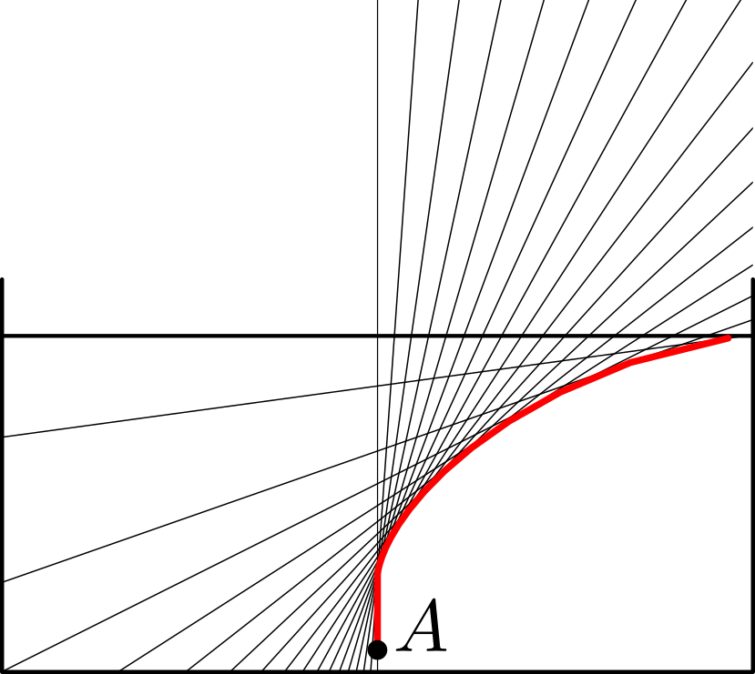

যদি এক পাত্র জলে একটা পেন্সিলকে হেলিয়ে ডোবানো হয়, তবে পেন্সিলটাকে বাঁকা দেখায়৷ এর কারণ হল refraction.
এর ব্যাখ্যা হিসেবে এরকম একটা ছবি অধিকাংশ বইতেই দেখা যায়--
কেন পেন্সিল বাঁকা দেখাচ্ছে, তার ব্যাখ্যা
এই ছবিটা থেকে যে ধারণাটা জন্মায় সেটা হল এই যে, যদি জলের নীচে পেন্সিলের গায় কোনো বিন্দু
$A$ নিই, তবে সেখান থেকে বেরোনো
রশ্মিগুলো refractionএর পরে অন্য একটা বিন্দু $B$ থেকে বেরোচ্ছে হচ্ছে বলে মনে
হয়৷ ফলে মনে হয় যেন $A$
বিন্দুটা আসলে $B$ অবস্থানে আছে (অর্থ৷আত $A$-র virtual image হল $B$-তে)৷
আমি স্কুলে থাকতে কখনোই ছবিটা refraction-এর
সূত্র মেনে নিখুঁতভাবে
আঁকা চেষ্টা করি নি৷ কদিন আগে সেই চেষ্টা করতে গিয়ে দেখলাম যে, $A$ বিন্দু থেকে বেরোনো রশ্মিগুলো মোটেই
refraction-এর পরে যে
সব সরলরেখা বরাবর যায়, সেগুলো মোটেই concurrent নয়, অর্থাৎ এমন কোনো বিন্দু নেই যার মধ্য দিয়ে এই সবগুলো সরলরেখাই
যাবে৷ অবশ্য যদি সরলরেখাগুলো মোটামুটি কোনো বিন্দুর কাছাকাছাই দিয়ে যায়, তবেও কাজ চলবে, কারণ চোখের আন্দাজে সেটা
একটা বিন্দু বলেই মনে হবে৷ কিন্তু নীচের ছবিটা (যেটা refraction-এর সূত্র মেনে নিখুঁত করে আঁকা) দেখলেই
বোঝা যাবে যে, রশ্মিগুলো concurrent হওয়ার থেকে বহু দূরে৷ Refraction-এর
পরে বিভিন্ন রশ্মিদের
ছেদ বিদুগুলোকে লাল করে দেখিয়েছি৷ ফলে যে লাইনটা পেয়েছি তার ব্যাপ্তি বড় কম নয়৷

এখানে খালি refraction-এর পরে পাওয়া রশ্মি বরাবর সরলরেখাগুলোই দেখানো হয়েছে৷
এই গেল প্রথম সমস্যার কথা৷
এবার দ্বিতীয় সমস্যার কথায় আসি৷ আমরা যখন কোনো এক জায়গায় চোখ রেখে দেখছি, তখন সবগুলো রশ্মি
আমাদের চোখে পড়ছে না,
চোখে পড়ছে কেবল সরু একগুচ্ছ রশ্মি৷ যদি সেই সরু গুচ্ছটুকুকে নিয়েই খালি মাথা ঘামাই, তবে সেগুলো মোটামুটিভাবে
একই বিন্দু দিয়ে যায় বটে, যেমন নীচের ছবিতে দেখিয়েছি৷
$E_1$ ভাবছে virtual image-টা $B_1$-এ৷
কিন্তু যদি আমাদের চোখ সরাই, তবে তখন অন্য একগুচ্ছ
রশ্মি আমাদের চোখে ঢুকবে, তার ছেদবিন্দু অন্য কিছু হবে৷ যেমন $E_2$ দেখছে যে, virtual image-টা
$B_2$-তে সরে গেছে৷
ফলে আমাদের মনে হবে যেন
$A$ বিন্দুটা জলের
নীচে আমাদের চোখের সাথে সাথে নড়ছে (দ্বিতীয় ছবির লাল লাইন বরাবর)৷ কিন্তু জলের গ্লাসে পেন্সিল রেখে
পরীক্ষাটা করলেই দেখা
যাবে যে এমনটা মোটেই হয়
না৷ চোখ সরালেও $A$ বিন্দুর virtual image একই জায়গায় থাকে৷ গোলমালটা কোথায়?
তৃইতীয় সমস্যা-- যদি পেন্সিলটাকে খাড়াভাবে জলে ডোবানো হয়, তবে যেভাবেই দেখি না কেন, সেটাকে
সোজাই মনে হয়৷ এর যুক্তি হিসেবে বলা হয় যে, লম্ব রশ্মি refraction-এর পরও একই সরলরেখা বরাবরই চলতে
থাকে৷ কিন্তু এখানে লম্ব হল পেন্সিলটা, সেটা তো আর রশ্মি নয়৷ রশ্মিগুলো তো পেন্সিল থেকে চোখ পর্যন্ত, তাই
ওরা মোটেই লম্ব নয়৷ যদি আমরা
পেন্সিলটাকে $10 cm$ ডোবাই, এবং প্রায় $45^\circ$ কোণে হেলানো একটা সরু রশ্মিগুচ্ছ নিই, তবে
refraction-এর সূত্র অনুসারে অংক কষলে (বা ছবি আঁকলে) দেখানো যায় যে refraction-এর পরে ছেদ
বিন্দুর (মানে virtual image-এর) অবস্থান হবে পেন্সিলের প্রায় $7 cm$ সামনে (জল থেকে হাওয়ার ঢোকার সময়ে
refractive index
আমি $1.3$ ধরেছি)৷ ফলে পেন্সিলটা ভয়ানকভাবে বাঁকা দেখানোর কথা৷ কিন্তু তা দেখায় না৷ বা কোনো swimming pool-এর
খাড়া দেওয়ালকেও হেলানো বলে ভুল হয় না৷
কিন্তু refraction সূত্র অনুযায়ী তো সেটাই হওয়া উচিত বলে মনে হচ্ছে৷ তবে ভুলটা কোথায়?